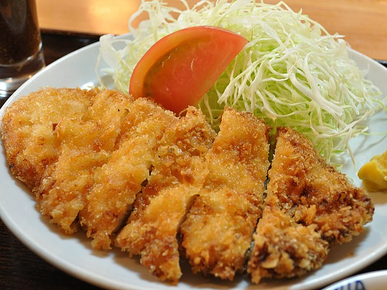

Home
Chicken Katsu

Chicken Katsu (not to be confused with kotsu is a Japanese fried chicken dish. It is traditionally made of Pork loin (where it is known as tonkatsu), but it can also be made with boneless skinless chicken. Chicken or pork katsu is can be eaten alone, but it's also the basis for katsudon.
Ingredients
- 1 boneless skinless chicken breast or boneless skinless chicken thigh
- ½ tsp salt
- ¼ tsp ground pepper
- 3 cups oil (a neutral oil for deep frying)
For the Breading
- 3 tbsp all-purpose flour
- 1 cup panko (Japanese breadcrumbs
- 1 large egg
For Serving
- Tonkatsu sauce
- Steamed rice
- Shredded green cabbage (optional)
- Tomato (optional)
Directions
- If you're using chicken breast, butterfly it so its a thin even thickness. If you're using chicken thigh, cut of excess fat and pound it with a meat mallet or rolling pin so it's a thin and even thickness.
- Season both sides of the chicken with salt and pepper.
- Put the oil in a thick bottomed pot and preheat it to 340°F (170°C). Use a thermometer to verify the temperature of the oil. Continue with the rest of the recipe while the oil is preheating
- Get three shallow dishes or plates. Crack the egg into one dish and whisk it. Put the flour into one dish and put the panko into the third dish. First, dredge the chicken in the flour and shake off the excess. Then coat the chicken in the egg. Finally coat the chicken with the panko and shake off the excess.
- When the oil has reached 340°F (170°C) add the piece of breaded chicken.
- Fry the chicken for 3 minutes until it's golden brown, flipping half way through.
- Serve the chicken with rice and optionally cabbage and/or tomato. Drizzle tonkatsu sauce over the chicken.